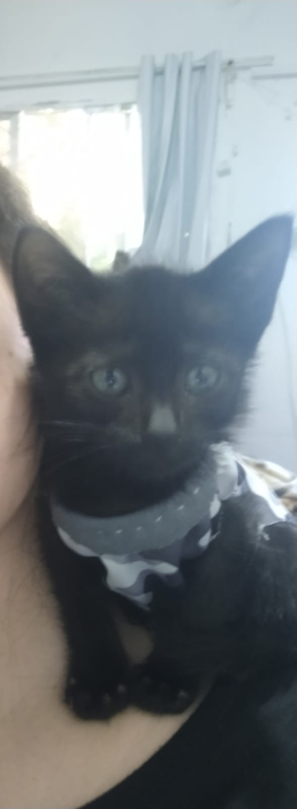

Nêni
Eu não sei nem da metade pelo que o meu Tenente Coronel Nêni -seu nome completo- passou, não sei mesmo.
Só sei que o mesmo foi encontrado junto dos irmãos e da mãe, ainda em idade de mamar, em um pátio terroso por duas moças que os salvaram. Sei também que muito pedi por um novo amigo para dormir comigo durante a noite e me fazer companhia na rotina diária. Sei que o mesmo é todo assustado e veio para minha casa com em torno de 35 dias de vida. Cedo? Sim, bastante.
Ver aquele neném -daí o nome Nêni- todo desconfiado, cheio de medo e necessitando de colírio nos olhos por causam da terra que entrou neles quando estava naquele pátio, partiu meu coração. Quando vi ele pela primeira vez pessoalmente, prometi a mim mesma que o faria o mais feliz que eu pudesse. E não deu em outra, mesmo estando a cerca de duas semanas aqui em casa, o mesmo está começando a se mostrar espoleta e muito carinhoso. Gosta de dormir no colo e me chamar para brincar, além de estar recém aprendendo a usar a caixa de areia, o que está se mostrando uma trajetória de fortalecimento dos laços entre nós. Meu pequeno "papagaio" que ama subir no meu ombro.

- 